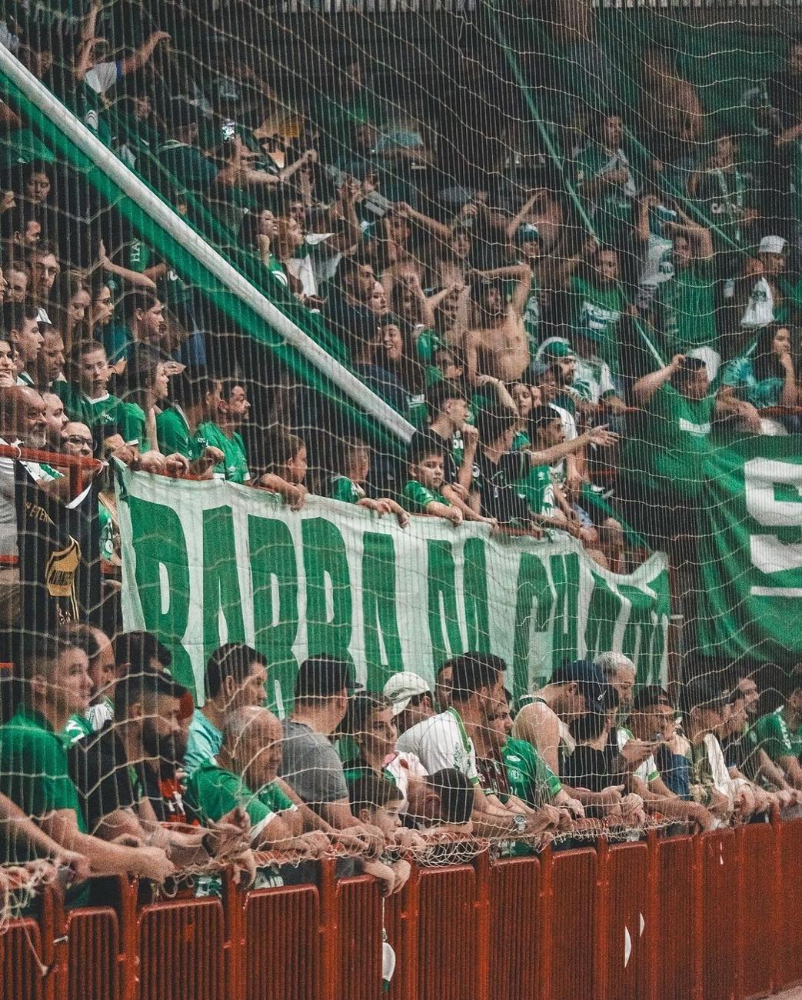

Estão à venda os ingressos para o primeiro confronto entre Prefeitura de Chapecó/Chapecoense/Unochapecó e São Lourenço pelas quartas de final do Campeonato Catarinense de Futsal Série Ouro 2026. A partida será nesta terça-feira (20), às 19h30, no Ginásio Plínio Arlindo De Nes (SER Aurora), em Chapecó.
Os bilhetes custam R$ 25 (inteira, primeiro lote), R$ 30 (inteira, segundo lote) e R$ 15 (meia-entrada). Os sócios-torcedores da Chape Futsal têm acesso garantido mediante apresentação da carteirinha, sem necessidade de adquirir ingresso. Crianças de até 12 anos também não pagam, desde que estejam acompanhadas por um responsável e apresentem documento de identificação.
A venda ocorre pela internet, nos sites chapecoensefutsal.com.br e ingressojogo.com.br, e em dois pontos físicos: Loja Oficial Chape Futsal, localizada na rua Paulo Marques, entre as avenidas Fernando Machado e Porto Alegre; e Loja iXap Sports, na avenida Getúlio Vargas, entre as ruas Paulo Marques e Vitório Cella. Também haverá ingressos na bilheteria do ginásio, no dia do jogo.

Chapecoense e São Lourenço disputam uma vaga entre os quatro melhores times da Série Ouro, principal competição do futsal catarinense. A volta está marcada para 28 de outubro, quarta-feira, às 19h30, na arena de São Lourenço do Oeste. Uma vitória do Verdão das Quadras no duelo de ida permitirá à equipe jogar pelo empate na volta para garantir a classificação.
Caso cada time vença uma partida, independentemente do saldo de gols, ou haja dois empates, a vaga será decidida na prorrogação. Persistindo a igualdade no tempo extra, a definição ocorrerá nas cobranças de pênaltis.
Fotos: Roger Silva/Chape Futsal